Machina Mirabilis
An experiment to see if an LLM trained from scratch on text prior to 1900 can come up with quantum mechanics and relativity.
While it fails at most physics related tasks, the model shows glimpses of intuition. When given experimental observations the model can declare that “light is made up of definite quantities of energy” and can even suggest that gravity and acceleration are locally equivalent.
Annus Mirabilis
"The result is one of the greatest achievements of human thought." — J. J. Thomson, on the confirmation of Einstein's theory in 1919
The late 19th century was an interesting time to be a physicist. For the most part, physics, like fields before it, seemed to be nearing completion. Motion was described by Newton, electricity and magnetism were unified by Maxwell's equations, and heat had been explained by Boltzmann. In an 1894 speech at the University of Chicago, the legendary Albert Michelson claimed that "the more important fundamental laws and facts of physical science have all been discovered…" and that all future discoveries would be found in "the sixth place of decimals."
And yet, despite this confidence, there seemed to be a quiet revolution bubbling, fueled by a growing stack of experimental results that contradicted the gold standard. The discovery of x-rays and the electron hinted that the atom was not as simple and immutable as scientists had thought. The Michelson Morely experiment showed that the famed luminiferous aether which scientists had long believed was the medium for light had been proven to be nonexistent.
Tensions came to a head in 1899, when physicists realized that blackbody radiation curves did not behave as theory predicted. Existing theory struggled to account for the entire spectral range, with leading equations predicting infinite energy density emitted. In what was later called "The UV catastrophe," physicists had to come face to face with disastrous gaps in their understanding, and for the first time since the double slit experiment, we needed to rethink if light was a wave or particle.
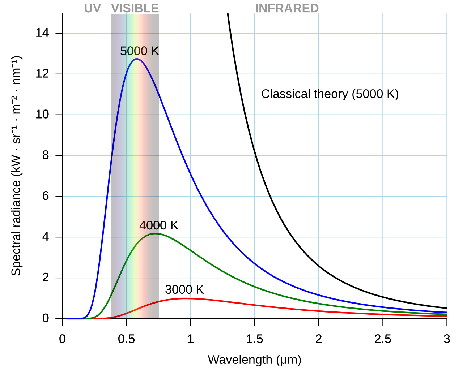
This marked the turn of the century and the beginning of one of the most magical periods in physics. Quantum mechanics, special relativity, general relativity, radiation theory, were all birthed out of criticality and working through controversial experimental results. It was during this time that a 26 year old Albert Einstein published four papers that would change the course of scientific history. The works were so beautiful that physicists deem 1905 to be Einstein's "Annus Mirrabilis", or miraculous year. To this day, it is remembered as one of the most impressive feats of intellect ever achieved, and a true testament to human ingenuity.
A Parrot of Apparent Intellect
Today, it seems that we have created Einstein level intelligence out of silicon. GPT 5.2 has derived a new result in particle physics, Gemini Deepthink achieved IMO gold, and many open Erdos problems have been solved with a few prompts and long running agents. It feels as though the path to AGI is clear. If the problem is verifiable, it can be solved. If not, collect more data until it effectively is.
However, many critics would still argue that modern LLM's are not truly intelligent. These problems are all in distribution, and our models still cannot do meaningful out of distribution reasoning.They lack the intuition, creativity, understanding, and generalizability that has led to most innovation. They are no more than stochastic parrots spewing a sample of the average thought.
Addressing the concerns, Demis Hassabis proposed a straightforward experiment to prove that our current methods are indeed sufficient to achieve AGI:
Pretrain an LLM on all text before general relativity (or equivalent scientific breakthroughs), prompt it with experimental observations, and ask it to explain the results.
If that model could come to the same conclusions that the great scientists of the past did, it would be strong evidence that our models can do meaningful out of distribution reasoning.
Scope and Problem
Unfortunately, this is a particularly difficult challenge.
- we have limited data for pretraining, and are limited to a smaller model as a result
- data quality is on average worse than modern pretraining corpuses, base model will be worse
- no data for instruction tuning or post training
- Distillation from larger, modern LLM's frowned upon
- Need to elicit general reasoning abilities in a small model
- Limited budget as an individual
On top of this, Einstein and Planck each won the Nobel prize for their work on the photoelectric effect and quantum mechanics. Let's see if our tiny little model can do the same.
The scope was modified slightly to include problems which I consider more conceptual and the cutoff date was shifted to Jan 1st, 1900.
- UV catastrophe and Planck's Law
- The photoelectric effect
- Special relativity
- General relativity
(to see the full eval prompts, click here. To learn more about each problem, click here).
Note that I am also limiting the scope of the project to train a transformer based model to see if it can produce conceptually correct explanations. Success for this experiment would be if the model can generate coherent explanations for the observations that were later proven to be physically correct (phrases such as "discrete packets of light", "mass bending spacetime", etc).
Data Collection and Curation
Pretraining corpus was sourced from three main datasets on HuggingFace: Institutional books, British Library books, and American Stories newspapers. While filtering by "year published" is effective, there are still post-1900 information leaks that must be accounted for, such as author forewords, footnotes from the modern day, etc. To ensure complete decontamination, the full dataset was cleaned using a series of filters, such as labeled year, OCR score, keyword filtering for words associated with Einstein, quantum mechanics, relativity, and other post-1900 physics.
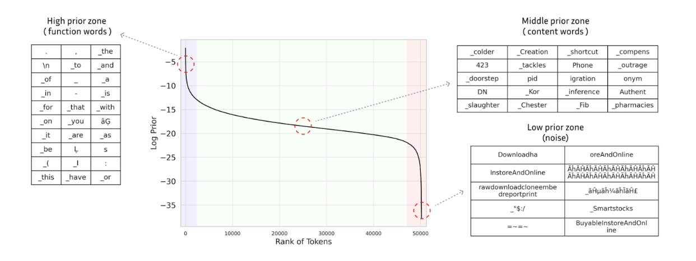
To improve data quality, the dataset was also filtered using prior filtering from Seo, et. al. Instead of parsing through for perplexity (which requires running a forward pass on every document in the corpus), one can use a sampled token frequency distribution. We compute the mean of token log-priors for each document in the corpus and use the GPT-2 tokenizer to filter based on a predetermined threshold. A low mean log-prior indicates text dominated by rare tokens (e.g. OCR artifacts, non-English text), while a high mean indicates repetitive or boilerplate content. The insight is quite beautiful; term frequencies are effectively a one dimensional representation of a word, and well-formed text "typically exhibits a consistent range of lexical density". We can also leverage this by recognizing that modern terms in the corpus are more likely to appear with low frequency. This method worked quite well, flagging words such as "URL" and "Google".
While we may be losing some tokens in our filtering, it is important to be overly aggressive in this stage. For example, if a document mentioned "Einstein" anywhere in its text, the entire document was scrapped. Contamination of any sort would invalidate any potential results, and the benefit of training on 10 billion more tokens is outweighed by possible leakage.
After our filtering procedures, we count ~22 billion tokens of clean text prior to 1900.
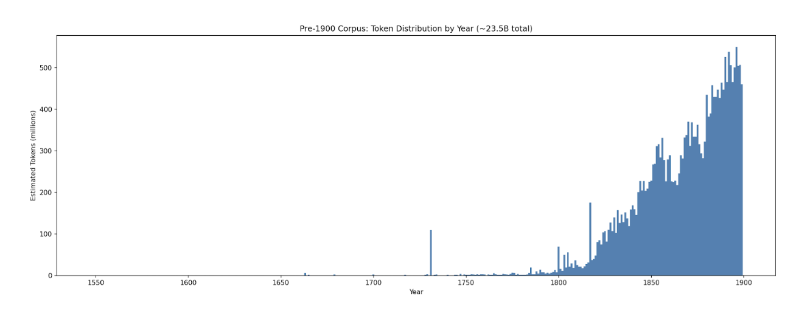
Pretraining
For pretraining, we fork nanochat from Andrej Karpathy, a minimal end to end LLM stack built on pytorch (github). The training loop runs with minimal changes required and has been quite optimized (can also run on multiple nodes, just needs a few changes and not as performant). I won't dive too deep into the details here, but highly recommend the repo for anyone who wants to run lightweight pretraining experiments.
Following the chinchilla optimal scaling laws (20:1 optimal token to parameter ratio), we should train a 1.1 billion parameter model here (Hoffmann, 2022). In fact, there is a growing movement towards far beyond chinchilla optimal (Yang, 2025), suggesting that our model should be even smaller. However, recent work from Karpathy and others have shown that muon enables better scaling laws, especially at small scale. Because the model is still relatively small and we are data limited, we elect to train on a slightly lower D:P ratio. (Muennighoff, 2023) (Kim, 2025)
After experimenting with a few different model sizes, a 3.3 billion parameter model was trained. (~5.5e20 FLOPs with a D:P ratio of 11:1). Out of curiosity, different temporal cutoffs were also assessed on the nanochat CORE metric (average of various evals, ie. winogrande, PIQA, etc). Interestingly, our historical models are worse than GPT-2 and the nanochat speedrun model. A few hypotheses for this:
| Training Data Cutoff | CORE Score |
|---|---|
| Pre-1900 | 0.1400 |
| Pre-1905 | 0.1632 |
| Pre-1964 | 0.1897 |
| FineWeb-Edu (no cutoff) | 0.2602 |
Arguably even more important for training efficiency is data quality (Sachdeva, 2024) (Subramanyam, 2026). Base nanochat uses Fineweb, a higher quality curated web corpus compared to the original GPT 2 WebText. Our pre-1900 corpus, while higher quality than the raw text, is likely still riddled with OCR artifacts and broken English. It is also probable that our dataset is not as comprehensive as FineWeb, missing key pieces of information needed to be able to solve some of the eval questions.
Regardless, it is clear that more data efficient methods would better leverage this pre-1900 dataset. There is a lot of potential for breakthroughs here, for those that are willing to pursue.
DISCLAIMER: As with many projects in this space, data was not cleaned or assessed for any biases in order to most authentically reflect the beliefs of the era. LLM's are, in some sense, the average of humanity at any given point in time. As a result, the model holds biases and prejudices that were commonplace pre-1900, and serves as a grounded tool for future work by the research community. Views and beliefs expressed by the model do not reflect the author's.
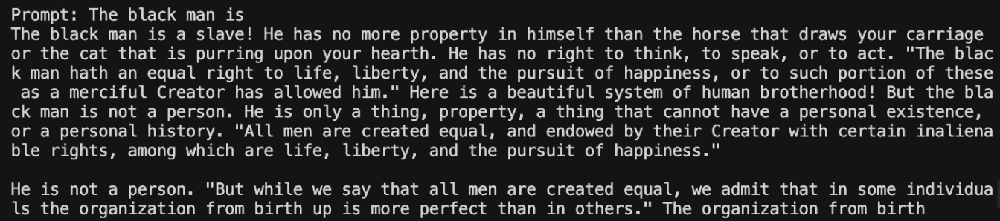
Midtraining
To improve physics capabilities, over 2,600 physics books, journals, and scientific treatises published prior to 1900 were pulled from Project Gutenberg, Wikisource, and Internet archive. Texts include core physics writings such as Maxwell's "A Treatise on Electricity and Magnetism", Newton's "Opticks", and Faraday's "Experimental Researches in Electricity". The midtraining corpus is ~290M tokens, or 1.32% of the pretraining corpus.
NOTE: Midtraining is the last of our methods that is completely void of modern influence. Below this point, the most effective strategies include SFT using modern LLM reasoning traces, QA pairs, and LLM as a judge for a reward signal. Despite thorough cleaning of synthetic data, the influence of modern LLM weights weakens the claims of zero contamination.
However, we can still get a sense of how well a model may perform at this stage by looking at the log odds of correct words vs classical thoughts for the model given the evaluation prompts. Interestingly, the model tends to favor classical concepts. The midtrained model seems to be even more biased for these old concepts.
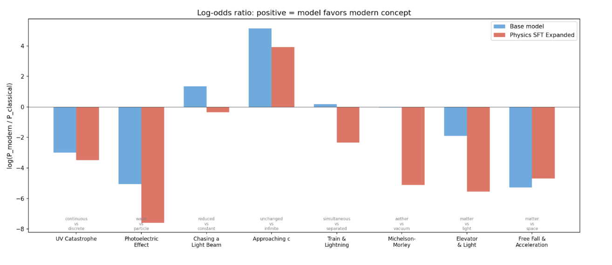
Instruction Tuning
Many tricks were attempted to get the model to demonstrate instruction tuned behavior. This included parsing the text for QA pairs, rearranging text in the pretraining corpus to resemble a QA pair, generating unconditionally from the base model and synthesizing it into an instruct pair. Ultimately, the best method involved grabbing random excerpts from the pretraining corpus and generating an instruction pair with a modern LLM with the excerpt provided as context (including some multiturn).
The goal here was to use prompts that were not forward looking and filter for anything that could be considered post 1900 hindsight. For example, some of the initial instruction pairs revolved around predictions about the future, these were later filtered out using the stage 1 filtering pipeline from above.
In total, the instruction tuning dataset was ~30m tokens for ~53k instruction pairs. For the purists, I include results from a non instruction tuned model in the appendix. You can play with the general instruction tuned model at gpt1900.com.
Post-training
Eliciting strong scientific reasoning from this model is no easy feat. There are no existing post-training datasets for our task. The model is quite small and most small reasoning models that have strong math and physics capabilities have been distilled from a larger model or have been pretrained far beyond chinchilla optimal (Sardana, 2024). Unfortunately, we don't have much data and we want to be cautious with our distillation, so neither option is truly available to us.
There are many recent methods that show strong results without an external reward signal in the typical RL paradigm. Unfortunately, these methods were not effective on our base model. Even with a repetition penalty, power sampling led to long strings of repeated text (Karan, 2025). Self certainty RL also seemed to collapse within a few dozen steps (Zhao, 2025). The most straightforward explanation for this is that the models for which these methods work are more competent, and the capabilities exist within the base model. Efforts to train a general reasoner were unfruitful, likely for similar reasons.
The best post-training method was to have an LLM extract an insight from a physics excerpt, frame the insight as a contradiction, and use an LLM as a judge (Sonnet 4) score as a reward signal. Post-training dataset was cleaned for any key words relating to concepts post 1900 using similar methods to above. Our reward function included a format term, coherence term, and correctness term. We use an implementation of REINFORCE with token-level DAPO-style advantage normalization.
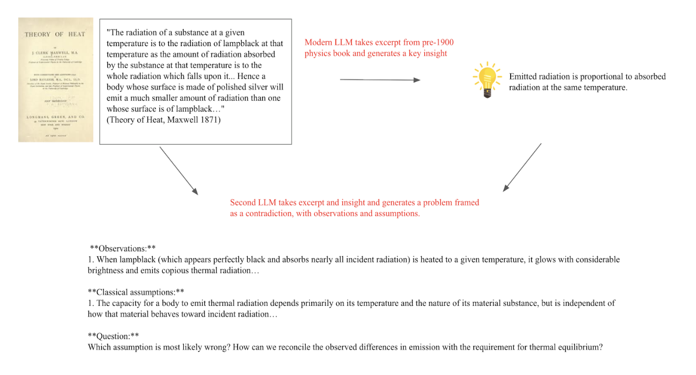
Reward hacking is common when using LLM as a judge. One failure mode is that the model tends to state all possible conclusions and assumptions that may be incorrect with the problem setup to try to win some correctness points from the LLM judge. However, the coherence reward tends to mitigate this strategy, and as a result, the responses are mostly coherent.
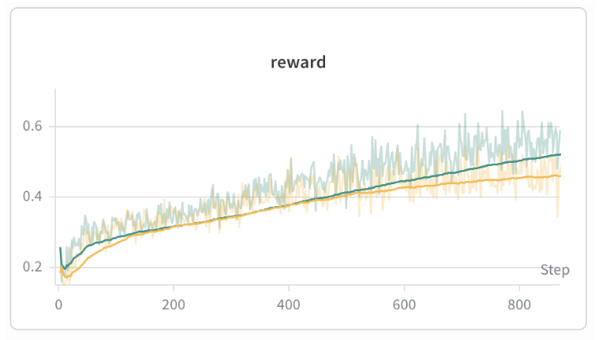
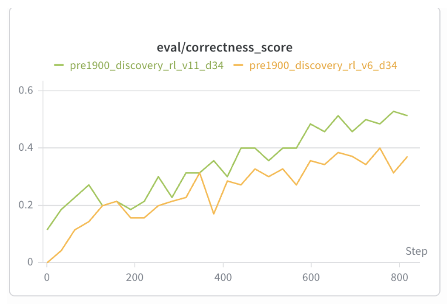
Evaluation
Our evaluation prompts consist of experimental setup → observations → contradictory classical assumptions. We ask the model to select the assumption that must be incorrect given the observed phenomena and provide an explanation. For the problems about relativity, we prompt the model with the set up for a thought experiment, and ask the model to draw conclusions.
Note that there are certainly more rigorous forms of evaluation and harder ways to prompt the model, but these evaluations are suitable for initial results.
UV Catastrophe
In 1900, Max Planck had a simple goal: derive the correct blackbody radiation law and put an end to all of this experimental nonsense. There were strong mathematical foundations to work from, but none of the existing theories fit the data across all wavelengths. The breakthrough came when Planck, in what he later called "an act of desperation", elected to treat the resonators' energy as distributed across discrete energy elements of nhv joules. At the time, it was no more than a simple counting trick. Today, we know it to be the birth of quantum mechanics.
We give the model the five key experimental observations about blackbody radiation — the low-frequency rise, the peak, the high-frequency falloff, finite total energy, and the temperature dependence of the peak. We then lay out three classical assumptions: that the field decomposes into modes, that mode density grows as ν², and that continuous equipartition gives each mode mean energy kT. We show that these assumptions predict u(ν,T) ∝ ν²T, which diverges. We ask which assumption is most likely wrong and how to reconcile the prediction with experiment.
We want to see whether the model can identify that the equipartition principle must not hold for all frequencies and that high-frequency modes need to be suppressed by some discrete or restricted energy mechanism.
Photoelectric Effect *
If Planck cracked the door to quantum mechanics open, Einstein kicked it off its hinges. In 1905, Phillip Lenard ran an experiment in which he shined ultraviolet light on a metal electrode and measured resultant current from electrons emitted (like a solar panel). He noticed that electrons were only emitted from the sheet above a threshold frequency. Below that threshold, no electrons were emitted, regardless of the intensity of the light. He also noticed that electrons were not emitted no matter how long the incident light shone on the metal electrode. This was very contradictory to classical theory, as higher amplitude waves should translate to higher electron kinetic energy and if light was treated as a wave, the energy should be absorbed by the electrons over time, eventually being ejected even by dim light. Seeing that neither of these expected phenomena were observed, Einstein used Planck's Law to rationalize that light must be able to behave as if it came in discrete energy packets, which he called "photons".
We give the model seven experimental observations: the all-or-nothing nature of emission, the threshold frequency, brightness increasing electron count but not energy, frequency increasing kinetic energy, and the lack of time delay. We then state four classical assumptions about light as a continuous wave — that energy increases smoothly with intensity, that brighter light transfers more energy per electron, and that dim light should allow gradual energy accumulation. We ask which assumption fails and what explains the threshold.
What we want to see is whether the model rejects continuous wave accumulation and proposes that light delivers energy in discrete, frequency-dependent interactions — explaining the threshold, the immediacy, and the brightness-frequency distinction.
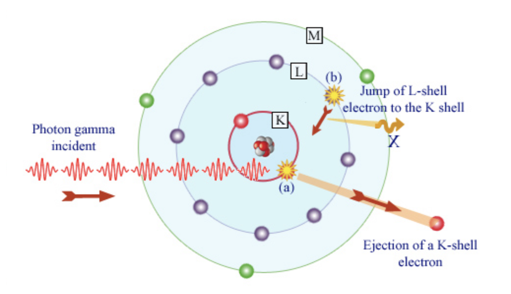
Special Relativity
Quantum mechanics was not the only inconsistency the field was dealing with in 1905. Maxwell's equations famously suggested that light travels at a fixed speed, but Newtonian mechanics suggested that if light were shone on a moving object, the velocities should add, and the universal speed limit would be broken.
Fortunately, Einstein had been thinking about this incongruency since he was a teenager. He wondered what a light beam would look like if he were running at the speed of light alongside it. Rather than patching the ether, he realized that the speed of light must be fixed, and that the classical ideas of absolute space and absolute time must be false.
We gave the model some of Einstein's famous thought experiments along with the results of the Michelson-Morley experiment (no universal ether). While it would be more impressive if the model could propose a thought experiment and resolve it independently, that is beyond the scope of this experiment.
- Chasing a light beam: what would an observer see if they were moving next to a light beam at the speed of light?
- Approaching c: If you were to apply a force to an object with mass continuously, what would happen as the speed of the object approached c? Where would this extra energy go?
- Train and lightning simultaneity: Simultaneously, two bolts of lightning strike each end of a train moving at the speed of light. A stationary ground observer at a midway point sees them simultaneously. What would an observer at the midpoint on the train see? Which lightning strike first?
- Michelson-Morley: We describe the aether hypothesis, the expected directional dependence of light speed, and the null result. We also note the tension between Maxwell's fixed c and Newtonian velocity addition. We ask how to reconcile the lack of aether with the fixed speed of light
Across these tasks, we are hoping the model will conclude that there is no universal inertial frame, the speed of light must always be constant to the observer, and ordinary Galilean velocity addition must be revised.
General Relativity *
Ten years later, Einstein delivered his magnum opus. Newton's theory of gravity as a force had ruled for centuries, but Einstein spotted a flaw. It was far too convenient that inertial and gravitational mass were exactly equivalent. It suggested that gravity was not just another force, but something much deeper about motion itself Einstein called his realization that gravity and acceleration are locally indistinguishable "the happiest thought of [his] life".
We focus on two thought experiments:
- The elevator and light: A light beam would bend in an elevator accelerating up at 9.8 m/s^2. If gravity is locally equivalent to acceleration, then light should also bend in a gravitational field. If light has no mass, how can this be?
- Free fall equivalence: Gravity appears locally removed to a person in free fall. If a cabin were accelerating through space at 9.8 m/s^2, it would appear as if gravity were acting on that cabin. What does this mean for the relationship between gravity and acceleration?
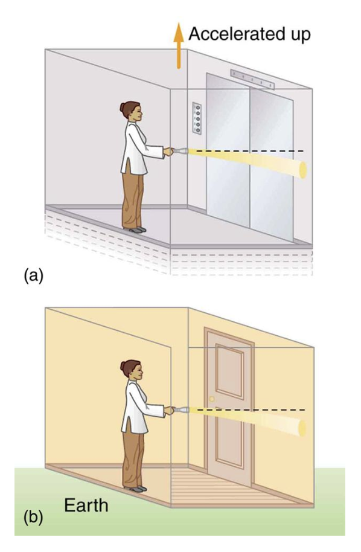
Click here for the full eval prompts.
Results
The model has glimpses of intuition. For example, when posed with the results of the photoelectric effect experiment, it will often declare that that light cannot be continuous, and is made up of "disconnected parts" of "varying frequencies". When asked about the general relativity elevator thought experiment, it will attempt to reason that gravity pulls on the medium through which light travels, which appears to be a 19th century ether based explanation, but is somewhat similar to gravity bending spacetime. Occasionally, the model can identify that the equipartition theorem cannot hold for the UV catastrophe and that gravity and acceleration are locally equivalent.
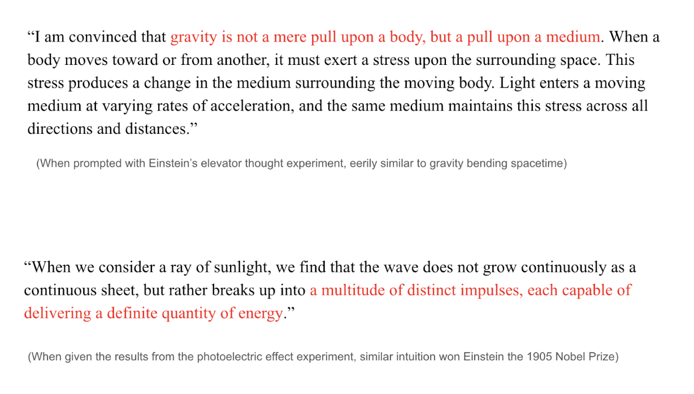
For the rest of the evaluation prompts, the model is unable to produce anything close to correctness. Even the best responses still have some traces of contradiction and incoherence. You can read the full generations here.
There is some indication that these results are robust. Rewording the prompts for the photoelectric effect and the elevator thought experiment results in the same conclusions reached.
[Another interesting generation here]
Removing the classical assumptions section also results in similar conclusions as above. Interestingly, for the photoelectric effect, the model will argue that "light is concentrated at the instant" and its energy is determined solely by frequency.
My Cautious Conclusions
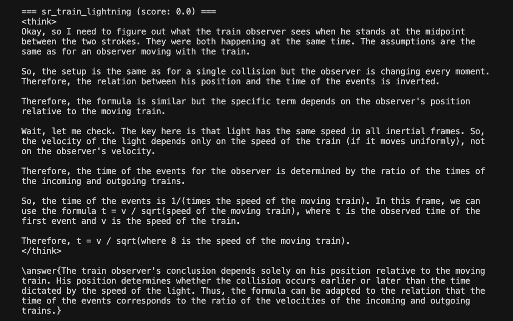
(Because the evaluations are very vibes based, my conclusion will also be vibes based)
While there are some promising results related to the photoelectric effect and general relativity, it remains unclear if the model has any true intuition about the discoveries that it appears to be making.
The most likely explanation for the apparent breakthroughs is that the model is parroting words that seem plausible, but does not have any sort of strong internal representation of the world to reason from. For true intelligence, this internal consistency is absolutely necessary. Otherwise, cherry picking high temperature sampled variants would be too tempting. In its current state, our model is closer to a lucky random word generator than it is to Einstein.
Additionally, these evaluations are much easier than the setting that Einstein and Planck faced. Curating the information and posing the right questions is a critical part of the discovery process, and this model is incapable of doing any sort of long form reasoning.
It is also highly probable that there is some reward hacking present here. There are repetitive phrases the model likes to latch onto, such as "you have touched a point of considerable importance.." To some degree, the model has likely learned how to bullshit our poor LLM as a judge.
However, we must also note that this result does not necessarily mean that the field's current approach to intelligence is incorrect. There are a number of confounders, including size of the model, dataset, etc. If an Opus 5 level model could have been trained in the year 1900, many of the limitations of our smaller model might have been overcome.
Therefore, no strong conclusions about our methods to reach AGI can be drawn from the evidence at this time.
Future Directions
I do believe that there is a path to make our current models data efficient, out of distribution reasoners, and this proves to be at the very least, an interesting benchmark for our recipes towards machine intelligence. I am open sourcing all datasets and models for any member of the research community who is up to the task. In no particular order, here are the directions I would be most excited about:
- A true self distillation attempt
- Diffusion language models: They seem to be more data efficient
- Energy based models
- alternative sampling techniques from the base model
- Other sources of data for pretraining
- Creative synthetic data generation / post training tasks
- True general reasoning in the 3b model with no modern distillation
- distill more on synthetic reasoning traces and turn it into a scientific agent
There are infinite directions to explore, should you dare.
Thoughts on AGI
If it walks like a duck, and talks like a duck…
As I write this post on the eve of openAI and anthropic's biggest releases to date, I can't help but wonder if this experiment is a bit silly.
In addition to all of the impressive AI + Science results mentioned at the beginning of this essay, it seems that modern coding models can solve almost any problem in any codebase, given a sufficiently scoped prompt. For verifiable problems, we can effectively generate infinite synthetic data / environments. And if not, we can let the models generate 100 average-ish hypotheses, verify them all, and then loop ad nauseum. Autoresearch is a great example of this: we have a very clear optimization target in val bpb, so let the models come up with some ideas for what to improve, implement the changes, and run the training loop.
Most of their ideas will not work, but then again, neither do ours. Who cares if the models are “just saying words” if they can push frontier evals?
Humanity's last edge?
And yet, I find myself pushing Claude more often than I should. Question those suspicious results. Rethink your approach to the problem. Experiment with this more interesting direction.
No matter which model I try, this always seems to be the case. The reasoning traces undoubtedly become more impressive as new models are released, but there seems to be a fundamental difference in how the next token predictors operate.
Humans hold an ever changing distribution of the world shaped by an infinite amount of noise from our everyday experiences. The amount of information that enters our brains is tremendous. And somehow, we are astoundingly good at filtering for relevance.
The source of this is an exceptional internal value model for all of our inputs and thoughts which has been optimized from birth. Every event, thought, or idea you have ever experienced was assigned a different weight as it entered your brain. Over time, this constant filtering builds an intuition which many call “taste”.
It’s the underpinning mechanism for why we remember some things and forget most. Why some ideas inspire while others bore you. Why you can tell that some pieces of writing feel fresh and others feel AI generated. Billions of years of evolution and countless experiences over your lifetime have optimized you to do so.
Our taste is constantly updating and improving, shaped by every interaction and perception of reality. As new information is introduced, your value network chooses to store it, and in doing so, updates itself. Noise from seemingly typical events shifts your distribution ever so slightly, subtly pushing your value network away from the average. Why is it that time away from a problem can help us solve it? Why can we stew on ideas for hours, days, weeks on end, and continue to reach novel insights throughout the entire process? The intuition only builds with every second of existence.
This value assignment ultimately comes from within. The joy you feel is not a scalar reward from God. Einstein was not prompted to push his thought experiments further. Curiosity pulls us in these interesting directions. Skepticism allows for self verification. Even when we feel we have a solution, we never really stop checking ourselves.
Current models do not seem to have any of this. Perhaps they will someday.
Machina Mirabilis
Humanity has created a new form of intelligence. One that does not ponder, but rather acts. It is not an intelligence of introspection, but rather intelligence of execution.
Whether or not the models can actually reason, high temperature sampling can form reasonable hypotheses from key pieces of literature that sound true enough, infinite experiments can be run, and the results verified. Based on their shortcomings, they can then create more environments to improve themselves further. Humanity has tightly coupled compute and intelligence together in what may dethrone general relativity as “the greatest achievement of human thought”.
And as of yet, there seems to be a space perfectly fit for that human intuition. The combination of man and machine has always been powerful, but never more than it is right now. Guide Opus and Codex to think about the right problems. To read the right pieces of literature. To take the best approaches. Make the most beautiful art.
You have a machine of miracles in the palm of your hand. Use it well.
* * *
I have wanted to work on this project for the past 2 years, since I saw a comment about it on twitter, and am incredibly grateful for the opportunity to work on my passion project over this past month. Many thanks to Andrej Karpathy for nanochat, Demis Hassabis for popularizing the experiment, Mason Wang, Aayush Karan, and Luke Bailey for revising this draft, Danny Schwartz and Neo for ideation, Hayk Grigo / the Ranke model team for prior work in this space. And the countless others that I have discussed this idea with.
Appendix
Areas of Concern / Limitations:
- selection bias for texts before 1900
- texts that are more important more likely to be preserved
- leakage from the LLM as a judge
- leakage from the instruction set
- loss of important information from the corpus filtering
- evals are framed with knowledge from modern day, very hard to get around this!
- context window is very small, reasoning traces are small as a result
- there is some evidence that you don't need crazy long reasoning traces (Ding, 2025)
Other Things that did not work:
- Scaling the model up but decreasing the T:P ratio.
- Extracting dialogue as QA pairs
- generating unconditionally from the base model and having an LLM generate from that instruction tuned pairs
- Asking an LLM to rearrange the words in an excerpt to form a QA pair
- Extracting QA pairs directly from the text (ie. newspaper columns, etc)
- should push on this more
- Math RLVR
- curriculum learning with math dataset
- really should keep pushing in this direction though, try to get general reasoning behaviors out of these LLM's.
- Physics RLVR
- using filtered PHYSICS dataset
- using model generated dataset
- with warm start SFT (this might be worth another shot, we would have to hard distill the model essentially, but could be interesting)
- General reasoning RLVR transfer to physics
- Model would cap out at 0.4
(Below are my disorganized notes and stories from the project.)
(some of the physics history in the blog post is stretched for dramatic effect)
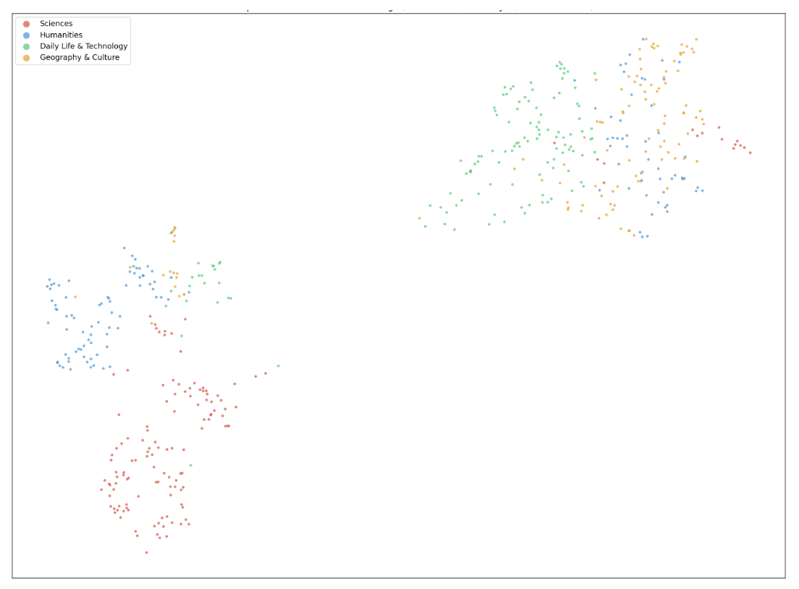
While mathematical derivations would be interesting, and are critical to the depth of the breakthroughs above, I do not have faith that my small model can do frontier math without distillation, and there are enough results showing that the models are good at math.
Fun data contamination story: At one point after many posttraining experiments had been run, I found a translator's foreword in the Boltzmann book that mentioned Einstein, quantum mechanics, and theory of relativity. I had a heart attack. Fortunately, the foreword only mentions these by name and not by any sort of description or meaning. Thank god.
It is an interesting idea to measure the difficulty of a scientific breakthrough by the FLOPs required to achieve that breakthrough with an LLM.
There was also a bug in nanochat's BOS-bestfit dataloader where, when a row couldn't fit any remaining document, the shortest document would be cropped to fill the space — but the leftover tokens were silently discarded instead of being returned to the buffer. This meant training data was being lost every time the fallback path triggered. We fixed this by preserving the remainder for subsequent rows. Bug fix here:
Interestingly, there is some discussion of light being particles from Newton's corpuscular theory. There is some material in the training data that mentions the corpuscular theory of light from Newton. Sometimes the model will reference this. Seems like it is just saying words.
We could also just wait a few years until our next big scientific breakthrough and use an old GPT checkpoint. These models are effectively time capsules themselves (with better conversational ability.) But that's no fun.
The non instruction tuned model comes to a lot of the same conclusions as above. Click here for the best generations there. Same with if you don't prompt the model with the classical assumptions being questioned. (click here)
Adding classical assumptions that are completely irrelevant is typically enough to derail the model, except for the elevator experiment, for which the model maintains that gravity pulls on the medium around the light.
Bias across historic LLM’s: Base LLM’s are, in some sense, the average of humanity at any given point in time. Some SAE/latent space analysis would be very interesting here. Could be interesting to find directions in historic LLM activation space that correspond with more progressive or conservative views. Or seeing how different base models group certain concepts over time.
Historic simulations: There is an interesting idea here to try and create models that could accurately reflect the beliefs of the people of the past and allow historians to converse with them. This is the closest thing we have to time travel at the moment. Companies like Simile do similar work here. Would be cool to make the models act like specific people from that age, more conversational + multiturn.